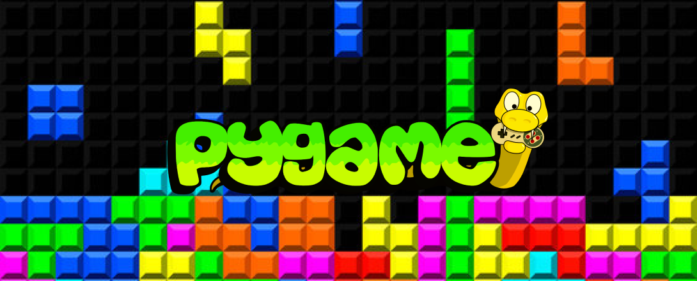

Task Automation

About
Pygame is a user-friendly Python library for 2D game development, offering graphics, sound, and input handling, making it accessible for both beginners and experienced developers. It's open-source and cross-platform, enabling the creation of games and interactive applications across different operating systems.About my project
A Tetris clone is a puzzle game where falling Tetriminos must be arranged to clear horizontal lines. As lines clear, players earn points. The game ends when the screen fills up with Tetriminos, challenging players to balance speed and strategy in arranging the falling shapes. Tetris clones maintain the addictive, time-tested gameplay of the original.